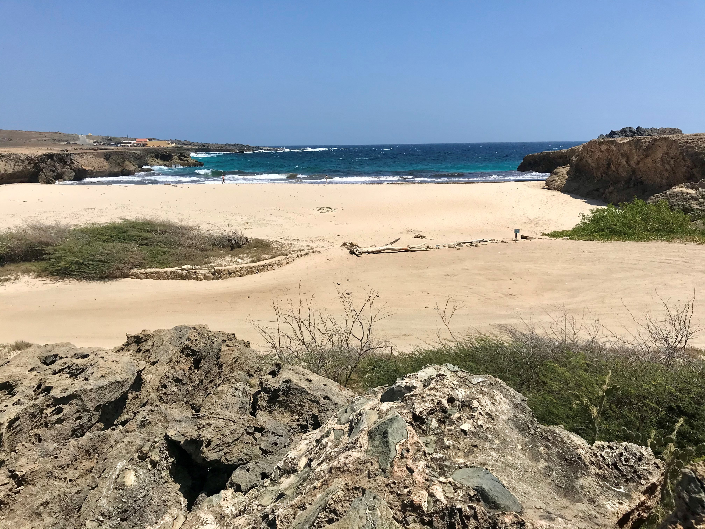
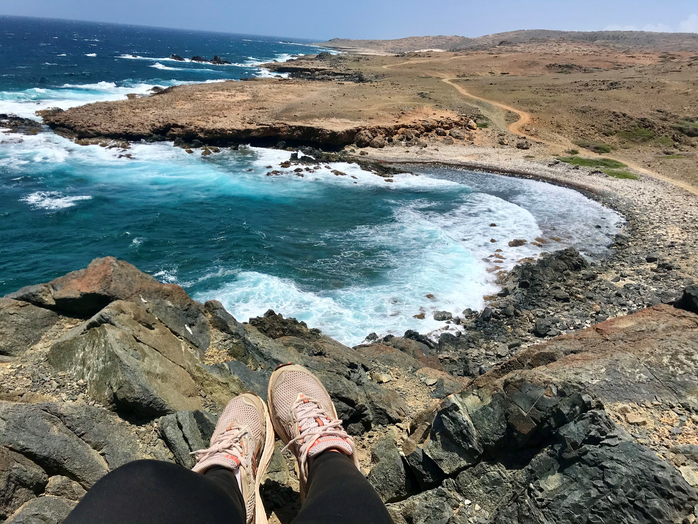
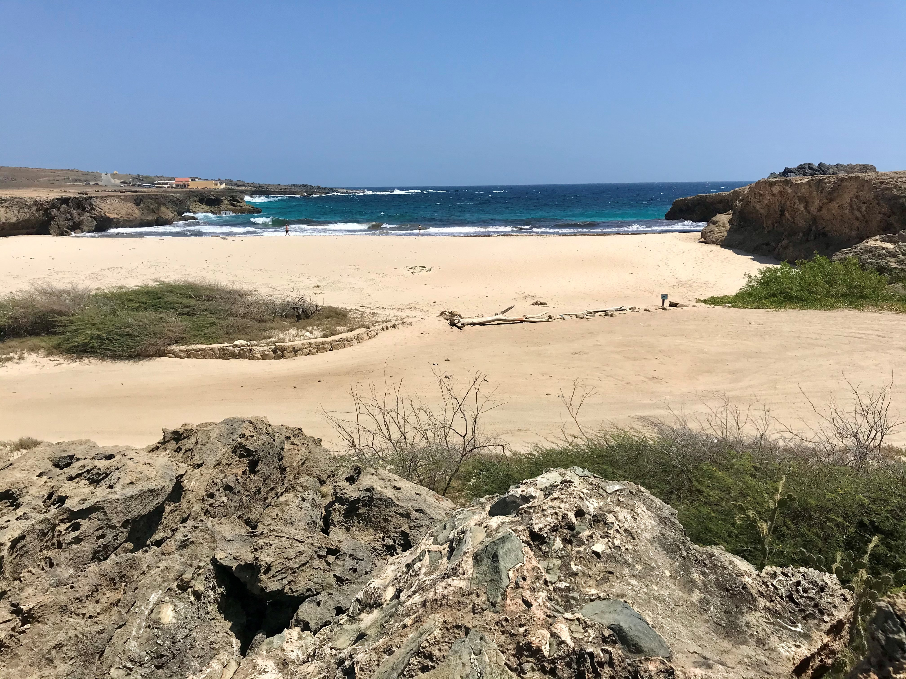
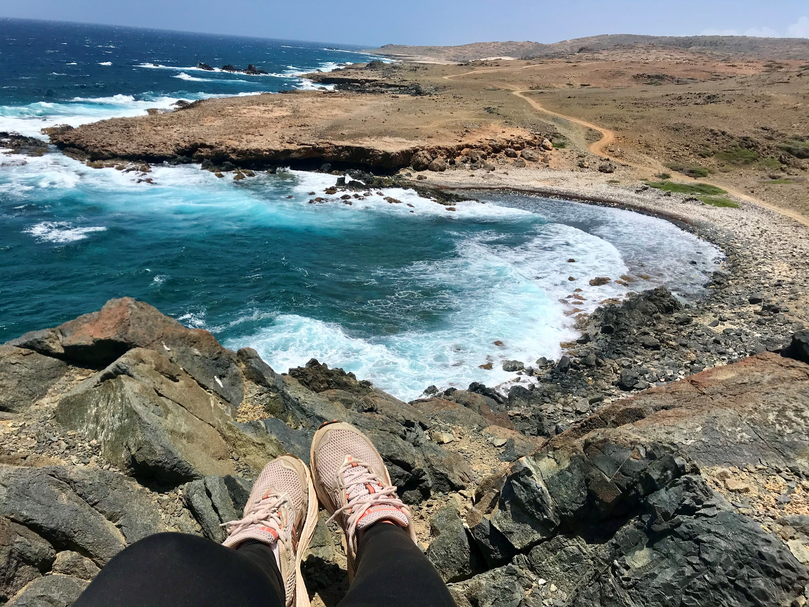

Activities
Aruba is known for its beautiful beaches and no one will blame you for soaking up the sun with a cocktail in your hand. However, if you want to leave your palapa for a bit and go out and explore, you will be amazed by what all Aruba has to offer.
Hiking
This one is my personal favorite. If you like hiking, then be sure to pack your hiking boots! Below, I will list a few of my favorite hikes.
- Daimari to Natural Pool - If you have a 4x4, you can drive all the way up to Rancho Daimari. With a non-4x4, drive up the ranch as far as you are comfortable and hike about 10 to 15 minutes to the ranch. When you get there, you walk down and keep right. Here you will enter Arikok National Park. Keep right with the ocean on your left, and amazing sites ans views will lead you to the Natural Pool (also known as 'conchi' in the local language. When the weather allows it, you can snorkel inside here and this actually makes for one of the best snorkeling spots on the island, so make sure to bring your snorkel set and a towel!
- Natural Bridge to Noordkaap - With any type of car, you can reach Aruba's Natural Bridge. Park your car here, and start your hike on the right side of the bridge. Keep left with the ocean on your left size. You will pass by amazing sites such as Andicuri Beach, Blackstone Beach and Tres Trapi. Reaching Noordkaap will take approximately 45 minutes. Make sure to bring enough water!
 



Snorkeling
Aruba has amazing snorkeling sites so if you are into this, make sure to pack your snorkeling gear (preferably fins too). Below, I will list my favorite spots to spot beautiful marine life.
- Boca Catalina - This beautiful beach offers the perfext mix of relaxation and amazing snorkeling. This is the spot where all catamarans stop and not without reason; here you find a mix of colorful fishes ranging from small to large. You might be lucky enough to spot a star fish!
- Tres Trapi - This beach is located next to Boca Catalina, but here is where the turtles are! Make sure to swim a little off shore and look at the bottom of the ocean, as this is where the turtles eat. Turtles need to come up the surface to breathe every few minutes so if you spot one, wait around a bit to see the turtle go up. Make sure to give the turtles enough space though and do not chase or touch them. Enjoy!
- Mangel Halto - Another beautiful beach, covered in mangroves, with one of the best snorkeling sites. This is where the divers go too. You can enter the water easily and follow the other snorkelers to find the best spots.
Water activities
Aruba is a gorgeous island, surrounded by crystalclear waters. No surprise that there are many different operators offering fun in the sun, out on the water. Below I have listed my absolute favorites.
- Parasailing - Floating peacefully high in the air, with amazing views over the whole island. Nothing beats parasailing! You will be up in the sky for around 20 minutes, and when you are lucky enough, you will be able to spot turtles or even rays. One company that I can recommend in Fun4Every1, located on Palm Beach between RIU Palace and Hilton.
- Boat tour - With boat tours, you will be able to snorkel at different snorkeling stops. You can opt for a private tour (with the above mentioned company for an example) or you can join a tour. My favourite tours are Palm Pleasure, Jolly Pirates, and Octopus.
- Atlantis submarine and semi-submarine - If you are not into snorkeling, but still want to see marine life, this is the thing for you! The Atlantis submarine will submerge to depths of 130 feet below the surface. You will spot huge varieties of fishes, from parrotfishes to even barracudas if you are lucky. The semi-submarine will float just below surface.